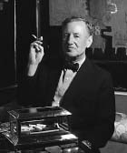

Courtesy of the Cecil Beaton Studio Archive at Sotheby's
IAN FLEMING was born in London on May 28, 1908. He was educated at Eton College and later spent a formative period studying languages in Europe. His first job was with Reuters News Agency where a Moscow posting gave him firsthand experience with what would become his literary bête noire—the Soviet Union. During World War II he served as Assistant to the Director of Naval Intelligence and played a key role in Allied espionage operations.
After the war he worked as foreign manager of the Sunday Times, a job that allowed him to spend two months each year in Jamaica. Here, in 1952, at his home “Goldeneye,” he wrote a book called Casino Royale—and James Bond was born. The first print run sold out within a month. For the next twelve years Fleming produced a novel a year featuring Special Agent 007, the most famous spy of the century. His travels, interests, and wartime experience lent authority to everything he wrote. Raymond Chandler described him as “the most forceful and driving writer of thrillers in England.” Sales soared when President Kennedy named the fifth title, From Russia With Love, one of his favorite books. The Bond novels have sold more than one hundred million copies worldwide, boosted by the hugely successful film franchise that began in 1962 with the release of Dr No.
He married Anne Rothermere in 1952. His story about a magical car, written in 1961 for their only son, Caspar, went on to become the well-loved novel and film Chitty Chitty Bang Bang.
Fleming died of heart failure on August 12, 1964, at the age of fifty-six.